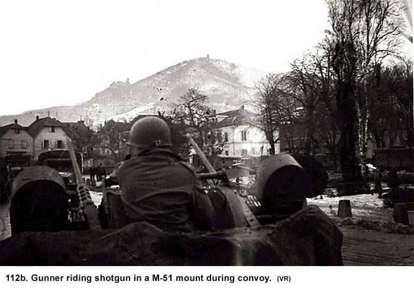
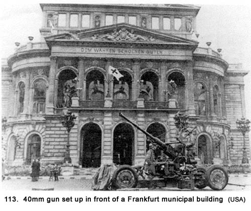
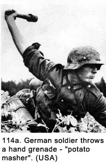
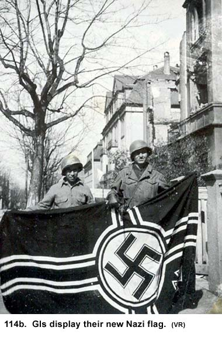
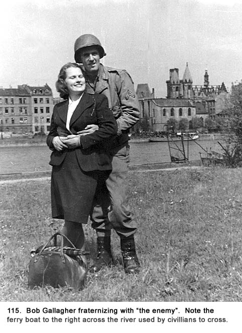

|
Table of Contents < - - - return Chapter 20 < - - - next
World War II Story by Robert F. Gallagher Chapter 19 - Frankfurt Am Main, Germany No man is worth his salt who is not
ready at all times to risk his body, to risk his well-being, to risk his
life in a great cause. _______________________ We packed up, formed a convoy of Batteries C, D, and Headquarters down Heerstrasse, the main street of St. Goar, and then moved out across the pontoon bridge the engineers had built. On the other side we picked up Batteries A and B who had been guarding that side of the river. As usual, the M-51 mounts had their four .50 caliber machine guns loaded and ready to fire. A gunner sat in the bucket seat scanning the sky (See Fig. 112b).  While passing through St. Goarshausen, we saw more of the damage done by the artillery barrage and the guns from the tank destroyers. There were many destroyed German vehicles along the road. For all the shells that had rained down on that town, it was still in fairly good conditions overall. We concluded the towns with severe damage had been the recipients of heavy bombing attacks, not just artillery shelling. The dead and wounded were all removed, and civilians were back milling about. They did not seem to look as downhearted as those we had seen in other German towns. The children would watch us as we passed, while the adults ignored us. When we climbed up and out of the gorge, the terrain became heavily wooded and very hilly. The road twisted and turned as it wandered through valleys and up the sides of the mountains. We hit a stretch of road where it meandered back and forth on the side of a mountain, making the convoy looked like a snake uncoiling. At times, some of the convoy was going in one direction and we could look across a gorge and see another part going the opposite direction. On one side of the road, there was a blank face that rose straight up and the other side pitched downward into deep canyons. The grade was steep, and our trucks were groaning under their loads. More Trouble With Our Truck We cleared the mountain and were most of the way down into a valley on the other side when our truck engine started to smoke heavily. We pulled to the side of the road to allow the rest of the convoy continue on. The engine died, and, after it cooled down, it would not turn over. Lt. Engler came by in a Jeep and told us he would send us help when the convoy reached Frankfurt am Main, our Battalion’s next stop. He then left to rejoin the convoy. Grimes worked under the hood of the truck for some time and concluded the engine was frozen, which meant it could not be fixed at this location. We were about ten miles outside of St. Goarshausen. The crew members of our M-51 mount machine gun, who were on the other truck, had gone ahead with the rest of the convoy, leaving us eight men, the 40mm gun, and the heavily laden disabled truck in the middle of a valley. This broken-down truck was the same one we had used to make a reconnaissance down into St. Goar with Lieutenant Kraft just a few weeks earlier. What if this had happened then? We were parked at the side of the road next to a small clearing. There was rich green foliage and trees everywhere except the winding two-lane road. There were no personnel or houses anywhere in sight. We wondered if we had gotten off the main supply route because there was absolutely no traffic going past our site. For the remaining part of the day, we just stood around and talked. Later, we put our bedrolls down on the tall grass of the clearing that acted as cushions and laid on them in preparation for sleeping that night. We kept hearing noises in the woods. We wondered if it was animals or stray German soldiers because we had been told the Germans left snipers behind when they retreated to slow down the advancing Americans. The two dead German soldiers we had come across up on the ridge above St. Goar were good examples this was not just another unfounded rumor. Could there still be snipers around? We were sure no one had bothered to stop and clear these woods in a mopping up operation. If there were German soldiers in those woods, they would be hungry and desperate. The Third Army was hell-bent on capturing town after town, and they figured any stragglers left between towns would eventually surrender on their own. Also, before we left St. Goar, we had heard a rumor (confirmed much later) that despite the fact the main thrust of the Third Army had already advanced some distance past the Rhine River, there were pockets of resistance near the Rhine and we were in one of them. Time dragged while we were there with nothing to do. Idleness brought on apprehension about our location. Why weren’t there any Army vehicles on the road? Was there some ominous reason for this? The sky became more overcast in late afternoon and the sun seemed to set earlier than usual as it dropping behind the tree-covered ridge of the mountains. During daylight the scenery was beautiful, but as the sun went down, the beauty went with it. First, the long shadows began to hide details as dusk settled over us like a blanket. Then, a blue-gray haze covered the area leaving only the outline of the mountains against the darkening sky. The forest became dark well before the open area did. Things began to look more than a little bit eerie. We moved our rifles closer so we could get to them in a hurry. Before complete darkness fell, we talked about building a fire but decided it might not be the best thing to do. It would draw attention to our site if there were any German stragglers still about. We put a guard out and the rest of us lay in the dark talking until we dozed off to sleep. My guard duty shift was from 0200 to 0400 hours. It was a time I won’t forget. The guard ahead of me woke me at 0200 hours sharp. He had a lit flashlight in his hand, but he turned it off immediately as he reached his bedroll. I knew everyone else was sound asleep. We did not like to use flashlights under those circumstances because it made the holder a perfect target if an enemy soldier was nearby. It was so dark out you literally could not see your hand in front of your face. It was such a strange feeling having your eyes wide open and not being able to see a solitary thing, especially after coming out of a sound sleep. Without using my flashlight, I stumbled up to where the truck was parked, felt for it, and then stood on the road with my shoulder touching it for orientation. I cocked my M-1 rifle to put a round in the chamber, but there was already one there, and I ejected a shell onto the ground. It bounced on the pavement and seemed to roll a long distance before it came to rest. I made no effort to retrieve it. The rifle in my hands, which usually supplied me with a great deal of confidence, did not quiet my jitters. I felt as though I was unprotected against some invisible danger, real or imagined, I was confronting alone. Even though there were seven other crewmembers only a few yards from me, the loneliness persisted in the pitch-blackness. I had pulled guard duty a hundred times before this in my Army career without feeling the same apprehension. There was something different about this situation. Was it the location or the total darkness? There were crewmembers snoring and noises I could not identify coming out of the woods nearby, and my imagination was running rampant. Was that someone coming up on us? Were we all going to be killed by some German stragglers? Should I put on my flashlight? If I did, would I be the first one killed? It occurred to me several times to wake some or all of the other crewmembers. But what would I say to them? “I’m scared.” “I want some help.” “I hear noises.” “It’s pitch black and I can’t see a thing.” None of them sounded right. A couple of men had pulled the same guard duty before me, under the same circumstances, and they didn’t wake anyone for help. I finally decided to just wait it out and make the most of the situation. Also, I finally realized I was still half asleep. I tried to do some exercises to stay alert and hopefully take my mind off those noises. But, with nothing to orient on, I kept losing my balance. I looked at my watch; it was ten minutes after 0200 hours. My eyes began to hurt from the strain of glaring out into the darkness and seeing absolutely nothing. Those two hours seemed like an eternity. Finally, at 0400 hours, I woke my replacement, and unlike the fellow who preceded me on guard duty, I stayed with him for about half an hour before going off to bed. Nothing really happened that night, but I can remember it like it was yesterday. The next morning a tow truck showed up and hauled us into a supply depot in the town of Rudesheim back on the Rhine River. We got a new truck, transferred our equipment, hitched up the 40mm, and took off heading east for Frankfurt. We hoped we would have better luck with this new truck, especially with the tires. Adventures In A Big City We arrived in Frankfurt on the evening of April 11. It was the biggest city we had been in up until that time and bigger meant more destruction. It differed from other German towns in that the destruction was spread out over a bigger area. The city had tremendous damage from Allied bombers. There were buildings in some parts of the city that seemed to be habitable as long as living without windows, roof missing several area and pock-marked walls did not bother you. In other areas, there was near or total destruction. We drove around the city, looking for members of our battalion but were unable to find them. It was getting dark, so we decided to bed down for the night. We picked a deserted street in a business district that had shops (not open) on both sides. At that time of evening, there were no civilians to be seen, even though there were many apartment buildings, or parts of the same, still standing in the area. The German people had a strict curfew imposed on them by the Allied forces. Anyone caught outside his or her house from sundown to sunup could be shot. We argued among ourselves whether it was could be shot or would be shot, and we concluded that it was could be shot. It was something we should have checked with our Battery Headquarters, but that was the last thing we would do. We staked out places on the truck to sleep and put one man on guard duty. At about 2200 hour, before we fell asleep, we began to hear music, talking, and laughing coming from a store down the street. Several of us walked down to investigate and found a full-fledged party going on. The store was full of GIs and German girls who were drinking wine, and some were dancing to the music. We never did find out what was making the music, because they would not let us in. A well-oiled staff sergeant had made himself the designated guard at the door, and he was already in a belligerent mood. We decided not to make an issue out of our admittance. The soldiers all had sleeve patches of the Fourth Armored Division, but we never saw any of their vehicles. As we started to leave the party, everyone inside started to sing the German song Lili Marlene. While in London, we had learned about this song, which was very popular with the GIs. The words are based on a German poem of 1915, and it had great sentimental meaning to German soldiers. Then the British and American troops picked it up during World War II. It was sung extensively during the war in both German and English. It had a very haunting melody that transcended which side of the war you were on. There were several parodies of the song written later for propaganda purposes by the British that mocked the German battle losses, but the original version is still the best. Its lyrics went as follows: Underneath the lantern by the barrack gate, Darling I remember the way you used to wait, 'Twas there that you whispered tenderly, That you loved me, You'd always be, My Lili of the lamplight, My own Lili Marlene. Time would come for roll call, Time for us to part, Darling I'd caress you and press you to my heart, And there 'neath that far off lantern light, I'd hold you tight, We'd kiss "good-night," My Lili of the lamplight, My own Lili Marlene. Orders came for sailing somewhere over there, All confined to barracks was more than I could bear; I knew you were waiting in the street, I heard your feet, But could not meet, My Lili of the lamplight, My own Lili Marlene. Resting in a billet just behind the line, Even tho' we're parted your lips are close to mine; You where that lantern softly glows, Your sweet face seems to haunt my dreams, My Lili of the lamplight, My own Lili Marlene.1 We stopped long enough to listen to the song, and it soon generated a strong feeling of nostalgia in us. It was surprising how a song affected our mood. When it was over, we went back to our truck to spend the night with a feeling we had not experienced in some time. It was as if we had just received a letter from home telling about all the good things happening there. Before we fell asleep, we discussed the irony of GIs singing a German song, especially in a German city. Dillon commented, “If they start into Deutschland Uber Alles (Germany above all.), maybe we should go back and check their dog tags.” The next morning, we drove around looking for someone
associated with our outfit. When we found one of the other gun sections in our
battalion, we were able to contact the Battery-D Headquarters. The battalion’s
gun sections had been scattered out throughout the city (See Fig. 113). We
joined up with our machine gun crew and were assigned to a gun site on the bank
of the Main River, right in the middle of the city. The river was in a
confined channel with concrete walls on the sides. Next to the river on both
sides was a fifty-foot wide level area of ground. Then, on both sides, there
was a twenty-foot-high wall, behind which was a street. Beyond the streets
were three-and four-story buildings. It was similar to the Chicago River as it
flows through the Loop, only the buildings in Frankfurt were not as tall.
There were a lot of churches in this area, and their steeple spires, or, in
some cases what was left of the spires, were sticking up among the damaged
buildings.  We dug our gun in along the bank of the river and set the sand bags in place. We pitched the two tents against the wall with the street above and then set up our cots. The trucks were parked next to the tents. The M-51 mount was set up in the middle of a small pedestrian bridge over the river, just downstream from us. The civilians were not allowed to cross on this bridge, and the mount took up most of its width. Again, we did not know what we were protecting at this site. All the other bridges we could see in either direction, were destroyed either by the Allied bombers or by the retreating Germans. A lot of civilians were around during the day. They would walk down a ramp from the street to the bank of the river. The two tents were just below this ramp wall. One day we got some fresh rations that included pork chops. It was a rare treat, and we cooked them over an open grill. The smell from the roasting meat was passing up and over the ramp. We looked up and there were about a dozen civilians looking down at the meat being cooked. Fresh meat was a rarity in Germany. There was a ferryboat docked about thirty yards upstream of our gun emplacement, where the civilians crossed the river. Unlike most of our other locations, this place was very active, and there was a lot to see. A searchlight crew was located about two hundred feet downstream of us on the same side of the river as we were. When we were all settled in, three of us went out to explore the neighborhood. Right behind our gun position, away from the river and up near the road, was an impressive-looking four-story building with minimal damage. Members of the searchlight crew, who had been there a few days longer than us, told us to be sure and check it out. They were somewhat vague about what we would find there. Mounted over the front entrance of the building was a large plaque made of bronze depicting a screaming eagle holding a wreath surrounding a swastika. We went in and found it had been the local Gestapo Headquarters. The inside of the building was even more impressive than the outside but in a very austere manner. There were a lot of papers scattered about, and many of them had Nazi swastika symbols on them. There was an oversized atrium in the middle with a very large staircase. The building had no visible structural damage but most of the windows had been blown out. We commented it had to be a government building because the halls, staircases, and open areas took up most of the floor space. It appeared the architect’s main objective was to create a grandiose appearance with usable office space being a minor consideration. It was a very severe looking but impressive building that reeked of military opulence. While checking out the upper stories of the building, we found it had been heavily looted so we decided to go down into the basement to see what was there. Using flashlights, we went down the staircase. There, off a large main hall were three massive steel doors leading into conference rooms. The doors looked like something out of a bank vault, about a foot thick, with massive hinges and latches. This lower level had evidently been used as an air raid shelter, because there were stocks of food supplies lying about in the hallway. It was a very eerie looking place and it began to make us feel uncomfortable. We had our rifles ready to fire even though there was little chance anyone was down there. There was something about the place that spelled trouble. Later, I realized it too closely resembled the Gestapo buildings we had seen in American movies; only this was the real thing. From the doorways of the rooms, we panned inside with our flashlights. We saw desks, plush chairs, bookcases, maps, and pictures. One of the pictures was of Hitler and there were Nazi flags draped on several walls. It did not appear that Hitler’s picture had been defaced. That was a good indicator other GIs who had been in this area before us had not venture into the rooms. This should have rung a warning bell but it didn’t. We picked up a couple of German hand grenades that were lying on the floor near one of the doors. They were called potato mashers because of their shape (See Fig. 114a). In one of the training films we had seen on how to detect booby traps back in the States, this type of grenade had been shown. This kicked in a new fear factor. Suddenly it dawned on us like a bolt of lightning. The reason these rooms had not already been looted by GIs: they were afraid of booby-traps. Of all the places we would be during the war, this basement stronghold held the greatest potential for this, and we suddenly became very nervous. We stopped what we were doing and froze in position, convinced of the great potential for danger. We began to worry about making our exit. It took us a few minutes before we moved again. We were not ready to sacrifice our lives to satisfy the prospect of getting some great souvenirs. Now, the problem was, how did we get out of there safely? One of the two flashlights started to flicker from a dying battery, which made it even harder to navigate. Every step down the hall and up the stairs was done with great caution. We tried to avoid the debris on the floor and to check for thin tripwires, nearly invisible even under good lighting conditions. It took us about three times as long to get out of the place as it did to go in. We had not been down there long, and I for one was glad to get back upstairs. We checked out the rest of the building again before leaving. We made other trips over to the Gestapo building while we were in Frankfurt and that uneasy feeling returned each time, even though we always stayed away from the basement. One of those classic Army rumors began to circulate between the searchlight crew near us and our gun crew. The idea the basement might be booby-trapped had now become it definitely was booby-trapped. There were many great souvenirs down there for anyone who had the nerve or stupidity to go in and get them. Some days later, we saw the searchlight crew coming out of the building carrying the flags, pictures, rifles, maps, and other items we had seen in the basement (See Fig. 114b). They had decided to ignore all caution and go into the vault rooms. We wondered if the reason they perpetrated the rumor about the basement being booby-trapped was because they wanted to scare us away and leave the taking of souvenirs for them. We envied their loot but did not give them high marks for intelligence. As we got to know these crewmembers, we marveled at their lack of military decorum and their casualness about what they were supposed to be doing. Most of them were out of uniform in one way or another, some badly needed shaves, most of them did not wear their helmets at any time, and there was always a card game out in the open with four or more participating. They were all openly hostile about officers in general, and they talked like they were members of the Mafia. Their vocabularies were reminiscent of Sergeant Monteleone and his cadre members who had given us our initial training in the States. We had not met anyone quite like them before, and we were never sure how to react to them. They had been involved in the North African campaign, the Allied invasion of southern France, and the Third Army’s move through northern France and now Germany. They might have been called battle weary but operating a searchlight could be only marginally classified as participating in battles. We wondered if their long period of time in combat zones had anything to do with their demeanor or if they were just a bunch of thugs who wound up in the same crew. After our first Gestapo investigation off the building,
we continued on downstream along the bank of the river for about a mile to
where the buildings facing the river changed from offices to single-family
homes. They were large mansions lining the river and had all sustained
considerable damage. We walked up to one large home that was about
seventy-five percent destroyed and looked like no one could possibly live
there. The patio doors to a large atrium were blown in, so we went inside the
house. The roof was almost completely gone, and the place was a mess from
being exposed to the weather for many months. Heavy layers of soot and debris
covered the plush furniture, rugs and everything else in the room. There was a
strong smell of mold and decay. As I reached for one of the tankards, someone behind me said, “May I help you?” Bernal, Le Claire and I were all startled to see a man about fifty years old standing at the far end of the very large room. We had spun around while grabbing our rifles to point at him, but we soon realized that he was not a threat to us. He introduced himself as the owner of the house–or to be more specific, the part of the house that was left–and told us he was living in the basement. I suppose we should have been embarrassed to be caught trying to loot someone’s home while it was still occupied, but we were not. It is hard to explain this attitude looking back, but we had grown callous from seeing so much destruction. We did not differentiate between private property belonging to someone else (after all, they were the enemy) and that which was free for the taking (by us, the conquerors). Also, we assumed that it was open season in destroyed or nearly destroyed buildings, although we had not yet stooped to armed robbery, even of German civilians. The man spoke perfect English with a slight British accent. He told us he had been educated in England and that he once owned an apartment in London. Even though his clothing were soiled and wrinkled, he still looked and talked like a person of obvious wealth and position. He had an arrogant manner about him, but not so arrogant he was going to provoke the three armed men standing in front of him. His voice was cold and authoritarian and it occurred to me he might be a German officer disguised in civilian clothes. However, his words were anti government and he said he had opposed Hitler and all that went with him. “I’m not a Nazi,” he repeated several times. We didn’t know whether to believe him or not, because all the Germans we had met rattled on about being “Nix Nazi.” The expression had become a joke in any language and the English version did not ring with any more truth than it did in German. We wondered, where have all the Nazis gone with their dream of a thousand year Reich? The man then began to tell us about his living conditions. “I spent most of the winter months in bed because there was no fuel for heat. Without electricity, it was always dark in the basement. I still have to walk several miles to get water and there is almost no food available.” I don’t know if he was looking for pity or if he wanted us to help him. We were neither curious nor even faintly interested in what he had to say. His story was creating tension in the room, and we were anxious to get out of there. We realized by this time we should not have entered the house, and we were tired of hearing his sob story and more “Nix Nazi.” We started to move toward the area where we came in while the man continued to talk. He told us his son was downstairs in the basement and that he had been wounded on the Russian front, although he called it the Eastern front. We wondered if the son might be a deserter because, from the way the man described his condition, he should have been in a hospital. Also, how did he get here from the Russian front, which was hundreds of miles away? The man asked us if we had any medicine or bandages. We had our little first-aid packets attached to our gun belts that contained bandage gauze and sulfa powder, but we had no spares and did not give them to him. He told us that his wife and daughter had been killed by bombs in an air raid. As we were leaving (without the tankards), I could not help but remember that the Nazis–and perhaps the man we had just seen was one of them–had started the war that brought such havoc to the world. The chaotic existence going on in the house where the owner was forced to live in the rubble, his wife and daughter dead, and son badly wounded and without proper medical attention were glaring examples of the penalty the German people were paying for the chaos they had caused throughout many countries, including their own. Maybe it wasn’t fair to pass judgment on all the German people, but without someone to differentiate between the good and the bad, we had to take them to be all bad. Certainly, the odds were better with that assumption because it took a lot of people to run the Nazi machine. The incident caused some very mixed emotions. From that experience, we better understood where all the civilians lived in the bombed areas: any place they could, including in a lot of basements. We had not seen any temporary housing for the Germans, so these partially destroyed buildings were the only shelter available to them. It was live there or camp out in the open. Also, like the man we had just met, I am sure the civilians wanted to guard the few personal treasures they had left. There were millions of people in Europe living this way. We headed back to the gun position. On the way, we discussed the civilian we had just encountered in the bombed-out house. We wondered what a person like that did for the many years Germany was building their war machine before and during the war. He certainly wasn’t sitting around doing nothing. In a totalitarian government like Germany’s, you were either with them or against them, and those against them would not be living in a house like that. Maybe we were justifying our action, but we also believed it to be the truth. What we did not discuss among ourselves or even think about at the time was what the man thought about us. After all, we had been the ones who invaded his private home, armed to the teeth, with the intent of looting it. When we got back to the gun pit, we got word over the phone that President Franklin D. Roosevelt had died of a stroke on April 12th and that the Vice President, Harry S. Truman, was sworn in as his replacement. We discussed the matter, but did not feel it would have any effect on us. It was unfortunate Roosevelt would not see the end of the war in which he played such an important role. While Roosevelt had been the Commander-in-Chief of the armed forces, most of us thought of him more in terms of being a politician. There was some feeling of sadness, but no tears were shed. This lack of sentiment may have had something to do with our young ages, but we had seen so much death not even the passing of our national leader could generate much sadness. Most of the younger men in the crew knew little to nothing about politics or even about Roosevelt’s great deeds during the Great Depression. We knew absolutely nothing about Truman at the time. The next day at about mid-afternoon the sky filled with B-17 Flying Fortresses and B-24 Liberators flying at an altitude of approximately 20,000-feet. Both types of planes were heavy four-engine American bombers. We started to count them but there were too many. We estimated the number at a thousand. It was an amazing sight that probably would never be duplicated again in history. We had been sitting around the gun, scanning the sky, hoping to see some enemy planes but they all belonged to the Allies. Some city in Germany was in for an awful beating that day and we better understood why most of the towns we had seen in Germany had been laid to ruin. They were headed in the general direction of Berlin. It was interesting to watch how the civilians who passed near our gun pit acted. It was as if they wanted to stare at this phenomenon, but it was too threatening to look at for very long. They would look up for several seconds and then jerk their heads down as their faces contorted into expressions of fright. They must have had mixed feelings about the situation. These messengers of destruction overhead were not going to bomb their town this day, which was good, but their fellow Germans and possibly relatives were about to be annihilated somewhere else, which was too sad to contemplate. One only had to look around at the destruction in this city to know these people had seen their share of bombings and knew how it felt. Back in 1943, the Royal Air Force (RAF) had an operation called city busting in force as they sent many air raids against German cities. However, their planes had endured heavy casualties, and they were stopped. After that, the RAF and the American Army Air Force began concentrating on destroying transportation, fuel supply, and industrial facilities with greater success. In late 1944 and early 1945, the focus was back on mass raids of cities with the hope of demoralizing the population. The weakening of the German Luftwaffe and their inability to resist these raids was a major factor in this later decision. Right next to our tents on the riverbank was a shed that held ten four-man racing shells, sometimes called sculls. Two of our crewmembers took one out on the river and were rowing about. They had quarter-pound TNT packets, complete with firing caps, with them that they lowered down, one at a time, into the river by copper wires. Then they used the battery-operated telephone to crank up an electrical charge to set them off. Each explosion would send a geyser of water about twenty feet up into the air. We crew members all thought it was a lot of fun and the civilians looked on in wonder. Fish that would float to the surface would be scooped up and thrown up on the bank where the civilians would grab them. One day we were sitting on the sandbags around the gun pit when we heard civilians making some strange noises. They were running down the ramp and over to the ferry. Some of them were letting out moaning sounds, and some had handkerchiefs up to their faces. We went on alert in fear there was some kind of trouble brewing. We soon picked up this unbelievable stench that almost made us gag. We looked up at the roadway and saw there were two hayracks, passing by, each drawn by a team of large Belgian draft horses. Stacked up like cordwood on the racks about five feet high were emaciated bodies. It was a horrible sight and we, like the civilians, turned away from it in repugnance. The wagons moved along at a very slow speed, and it took some time for them to pass out of sight. We never did find out where they came from or what the purpose was in going through the heart of Frankfurt. There was no sign of an escort of any kind with them. The drivers of the hayracks just stared straight ahead with blank looks on their faces. We wondered how they could tolerate their jobs. The penetrating smell of death was so strong it lingered for some time after the wagons passed. It took even longer for the civilians to settle down as they whispered to each other and gestured with great animation. Some of the women had looked like they were going into shock when they first saw the laden racks. I’m sure the sight of a corpse was nothing new to them with all of the destruction that had occurred to their city but the stacked up emaciated look of these near skeletons was appalling beyond compare. We assumed a concentration camp was someplace in the vicinity, but we were just guessing at that. As we discussed the incident, Armstrong commented philosophically, “The horrible sight we just saw only lasted a few minutes, the smell lasted about half an hour and the memory will stay with us forever.” While we were in Frankfurt, a fellow walked up to us and started talking. He told us he had been a Polish soldier and had been captured by the Germans when they invaded his country in September 1939. He had been a prisoner of war since that time and had recently been released when the American Army overran the camp where he was being held. He spoke in Polish, but because Joe Bernal could speak that language fluently we could communicate with him. He was a very pleasant person, and we decided to help him out. His name was Steve, and we made somewhat of a mascot of him because he wanted to work for us. He stayed with us for several weeks, traveling from one gun position to another, eating what we ate and sleeping in an extra bedroll we furnished him. When the battery cooks brought out a hot meal, we all tried to get a little extra, and then we would share some with Steve. The rest of the time he ate rations like the rest of us, and we always seemed to have extras of those. He was short and thin, but he was as strong as a horse. He told us he was thirty years old, but he looked much older. His face was deeply tanned, hardened, and wrinkled like a man twice that age.. Six years in a German prisoner of war camp evidently had taken its toll. His slight build and thin face accentuated his weather-beaten appearance. But his large brown eyes were sharp and did not have that lifeless look we had seen in many of the ex-prisoners and slave laborers in Europe. There was something comical about Steve’s appearance. He looked like a ragamuffin with his well-worn, ill-fitting clothes–a mixture of an old Polish Army uniform and prison garb–and a cap he never took off. The military-type cap sat dead center on his head and it came to a point at the top. His boots were laced with rope, he wore no socks, and he seemed to always be stuffing the wax impregnated cardboard from the K-ration boxes into them to cover the holes in the soles. He never removed his boots, his cap or any article of clothes when he slept. This habit was a leftover from his recent prison days. Thievery was a problem in the camp, and the best way to protect the little bit of clothing you had was to never take it off. Spearing offered to give Steve one of the small woolen knit caps that were part of his Army issue. These caps were designed to be worn under helmets and evidently Spearing had two of them. He made the offer primarily because he thought Steve’s cap looked so ridiculous. Also, it was badly worn and it more than likely had never been cleaned. But, to the surprise of everyone, Steve refused the offer. Later he confided to Bernal that he did not want to be caught having anything American made in his possession. It was well known combat GIs had shot German soldiers who were wearing GI clothing when they were captured. While Steve was not a German, he had no papers to prove he wasn’t and he did not want to take any chances. He still had a long way to go through both American and Russian held territories to reach his home in Poland, his ultimate destination. He did not want to be accused of stealing an article of clothing from a GI, possibly a dead one. Although Steve was a very quiet person who had been through a lot of hardship, he had not lost his ability to smile and enjoy the comradeship he found with our crew. I always gave him my little packets of cigarettes from the rations and enjoyed seeing the pleasure they gave him. He would beam with delight and give me a slight bow, even standing up to do so if he had been sitting. Before sitting down, he would take off his cap and sweep it across his bowed body in an exaggerated gesture. The only thing he had gotten from his captors was two meager meals a day, and his description of prison food was nauseating. There was nothing sent from his home or any charitable organization. In fact, he had not had a word from his family or anyone else since he was captured. He would not discuss the details of his family or exactly where he came from in Poland so we did not press the issue. Without really realizing it at the time, I later felt helping Steve was the little morale booster our crew needed. While he was with us, everyone seemed to be in a better mood and the old bantering among ourselves, that we had been short on lately, returned. Steve was just one of the millions of displaced persons in Europe who needed help, and in aiding him at least we were doing something, however small. All Steve wanted to do was work and we tried to keep him busy, but there were times when we ran out of assignments. He seemed to become restless when this happened. When we were in a convoy or when the brass was around, we hid him. Obviously, he had a very strong dislike for all Germans because of the harsh treatment his captors had given him. The thing he wanted most was to have a gun. This would later become a problem for us. Not The Right Way To Attend Church When Sunday came around, the church bells in the city began to chime. Bernal, Le Claire, Steve, and I set out looking for a Catholic church. We crossed the river on the pedestrian bridge and headed for what looked like a large cathedral several blocks away. People were going in for mass, so we followed. A hole in the roof had been patched and the rest of the building was in fairly good condition. It was one of those large gothic churches that had been built centuries ago. It had a soaring vaulted ceiling with wood beams that flowed down into ornate wooden paneled walls. A field of blazing candles lit up one corner of the church and the confessionals were the size of a small house. It had to be a cathedral because of its size and majesty. I had never seen anything like it before. The stained glass windows had been replaced with clear glass. Whether it had been done before the area had been bombed or after they had been blown out, we did not know. There was a magnificent organ off to the right of the church with bellows reaching to the roof. It was right under the repaired roof and it was badly water stained. The church was already crowded, and we had to go down the main aisle about halfway in order to find a seat. On the way, we were stuffing our bandoleers of ammunition into our jackets. We could see and feel many eyes were focusing on us. It was a long walk to our pew, and the uneasiness we felt made it seem like a mile. Once again, as we did in Woippy, France, we were trying to do the impossible: armed soldiers trying to look inconspicuous in a church among a congregation of civilians. When we got into the pew, we had to find some place for our rifles, helmets, and gas masks. It wasn’t easy. The mass was said in Latin, like all masses at that time, so we had no trouble following most of the service. There was something nostalgic about watching the priest in his robes and the altar boys in their surplices move about near the altar in a manner we had seen thousands of times. Each Latin phrase the priest spoke out loud, like Domine non sum dignus, had a hometown ring to it. I had picked up a Missal in the pew from habit but soon realized it was a translation of Latin to German, which was of no help to me. There were two elderly women in the pew with us. Out of the corner of my eye, I watched them looking at out rifles lying on the floor behind the kneeler. When I looked over at them, they would jerk their heads back to their prayer books. What, I thought, you’ve never seen an M-1 in church before? Probably not. The church was crowded and the only empty seats I could see were the two or three places on each side of the four of us where the civilians were giving us a wide berth. We were not sure if it was because we were the enemy or because they thought we were heathens for bringing arms into the church. Maybe it was both. However, we did not dwell on the fact. When it came time for the gospel and sermon, a Franciscan friar, who was not the priest saying the mass, came out from behind the altar and mounted the pulpit with gusto. It was located on the left side of the church, about halfway back. He was a huge man with a physical presence one would not soon forget. He probably weighed three hundred pounds and there was an air about him that was somewhere between authoritative and pompous. He wore the brown hooded habit of the Franciscan Order that hung down to his ankles. Its symmetry was broken only by a white cord wrapped around his middle where a waist should have been. There was no public address system, but he did not need one because he had a loud, booming voice. He spoke in German, so we were unable to understand him. The reading of the gospel and the guttural tone of his voice told us this was a man who preached fire and brimstone. For the sermon, he started out in a normal tone but was soon ranting in a loud voice that made him sound like Hitler during one of his dramatic oratories. He was very theatrical as he waved his arms to accentuate each point he was making. When he put his right arm out alone, he looked like he was making a Nazi salute. Le Clare was sitting next to me and I wanted to whisper something to him about the friar’s dramatics, but I though better of it and said nothing. While I never would have admitted it, this man had me intimidated. About halfway through the sermon, we heard many of the people around us begin to cry and noticed they were quite upset. Handkerchiefs were being used to dab at watering eyes. When we got back outside of the church after the mass, Steve, who spoke German, told us the priest had told the congregation they had only themselves to blame for all of the destruction and hardship they were experiencing. He said Hitler could not have done what he did without the support of the civilian population and they should have risen up against him. We discussed this idea on our way back and concluded it would have been difficult, if not impossible, for the civilian population of Germany to overthrow their totalitarian government. Back at the 40mm gun, we spent our time scanning the sky and trying to keep from getting bored. It was a lot easier to stay busy at this site, because there were a lot of people around to watch and to comment about. Sergeant Kornich came by one day and told me one of the gun section leaders was being sent home for personal reasons, and I was being considered for his job. When he left, I was running through my mind reasons to tell him why I did not want the assignment if it was offered to me. Starting over with a new crew at this stage of the war did not interest me, just for one more stripe. It was a choice I would not have to make as things unfolded later. Most of the civilians passing to and from the ferry did not talk to us. They just looked at us with mild curiosity. One woman did stop and tell she was an American who had been trapped in Germany when the war started. She said she was from Georgia and was a Georgia Cracker, not a Georgia Peach. When young ladies passed, we would say something to them, but they would just smile or ignore us altogether. We had been warned that we were not supposed to fraternize with German civilians unless it was for official business. It was a rule we took lightly. Everywhere we went, the rule was being broken and from our limited observations, it was not being enforced. Our assumption in this matter was soon to be proven wrong. Learning The "No-Fraternizing" Rule The Hard Way One day two young women stopped to talk with us. They said they were Austrian, and they too had been stuck in Germany since the beginning of the war. One spoke fluent English. They told us about conditions in Frankfurt and how they were looking forward to going back to Austria, even if it was badly torn up. Armbruster took a picture of me with my arms around one of the girls while we were standing next to the river (See Fig. 115). The girls stayed only for about ten minutes and then they left to board the ferry.  Then a Jeep pulled up with a Lieutenant Harrison and his driver in it. He had been watching us with binoculars from across the river. He told Le Claire and me we had been fraternizing with the enemy, which was against regulations. Actually, we all had been talking with the two girls, and they really weren’t the enemy. We told him they weren’t even Germans, but he would not listen to us. He left our site and arranged to have both Le Claire and myself loose our stripes. The purpose, supposedly, was to set an example for the rest of the battalion. The theory was if it could happen to soldiers who had no previous trouble, it could happen to anyone. I lost my corporal stripes, and Le Claire lost his one stripe. The two of us were really upset, and even after all the years that have passed since it happened, I still get mad thinking about it. Overall, it didn’t make any difference in our duties. We just got a little less pay, but since there was no place to spend it, that didn’t matter either. It was the injustice of making us scapegoats that wasn’t right. The no fraternizing rule was the most abused regulation ever put out by the Army, and the GIs openly flaunted it on a wholesale level. Everyone was talking to the civilians and in a few months time, some GIs would be marrying them. If their intention in taking our stripes was to stop the soldiers from talking to the Germans, it didn’t work. We, and all the GIs we saw, talked to them every day. Later, we heard from GIs in the Headquarters Battery about parties held in Frankfurt with some of our officers and the local frauleins in attendance. Also, we remembered the party we had observed with men from the Fourth Armored Division and local girls just a few nights previous. Le Clair and I were not the only men in our outfit who lost their stripes for fraternizing. We learned later the usual punishment in other outfits for this offense was just a warning or a monetary fine. A court martial was highly unusual. It definitely was not uniformly enforced. The average GI looked at the restriction on fraternizing as being similar to the act of prohibition against liquor earlier in the century. Everybody fraternized and, in this case, an overzealous officer caught the unlucky ones. The rule looked good on paper to some rear echelon brass hats but was basically unenforceable in the field. I was reminded of a saying from our early days of training: military justice is to justice what mess hall chow is to fine cuisine. The members of the searchlight crew were enraged by Le Claire’s and my experience with the officers. They seemed more upset about it than we were. They used the words chicken s--- bastard and some much worse profanities in describing Lieutenant Harrison. We had seen members of the searchlight crew on several occasions talking to some young ladies and openly fraternizing with the civilian population on many occasions. They could not understand that it was outlawed by Army regulations much less that our own officers were enforcing it. A few days after our experience with Lieutenant Harrison, the searchlight crew told us an interesting story about an incident at the Gestapo Headquarters. Evidently, there were a couple of young ladies who had set up shop over there on the fourth floor and they were taking on anyone who was interested. The price for favors furnished was one pack of cigarettes. We had noticed the heavy traffic going into the building including most of the searchlight crewmembers. On this one particular day, there were two men from their crew up there with the girls when they heard someone roaming through the lower floors. They looked out from their rooms and saw a lieutenant and his T-5 (corporal) driver, who they recognized as being from our outfit, exploring the building. The two crewmembers went out into the fourth floor hall overlooking the staircase next to the atrium and lay down there in a prone position. They had their rifles ready and were planning on shooting the lieutenant and T-5 if they came up to the fourth floor and discovered them. They had selected who each would shoot whom as a precautionary against succumbing to the same fate as Le Claire and me. We did not doubt their story for a minute because this was a tough bunch of guys. Fortunately, the two men climbing the stairs only got to the third floor. From the description of the Lieutenant they gave, we concluded it was Lieutenant Kraft but we did not know who the driver was. We wondered, “Who are these guys?” When we were getting ready to leave Frankfurt, the searchlight crew gave us a lot of 10-in-1 rations in cardboard boxes they didn’t need. We loaded them up on our trucks and used them to supplement our regular rations. They contained some items, such as canned date nut bread, fruit cocktail, candy, and cigarettes, which we referred to as goodies. In addition to the newly acquired rations, we kept accumulating all kinds of things like mattresses, chairs, souvenirs, and many other items we were picking up from bombed-out buildings. Our convoy left Frankfurt, and when we bivouacked as a battalion on the night of April 19, there weren’t enough places on the truck for everyone to sleep. Some of the men had to spread their sleeping bags out on the ground. The next day we moved into the town of Hanau, our next location. Steve went with us. Chapter 20 < - - - next Table of Contents < - - - return
Footnotes and Source of Photographs. Copyright, Robert F. Gallagher, 1999 - 2015, all rights reserved on all images and content.
|